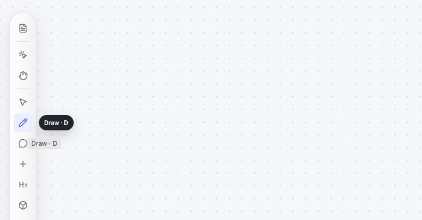
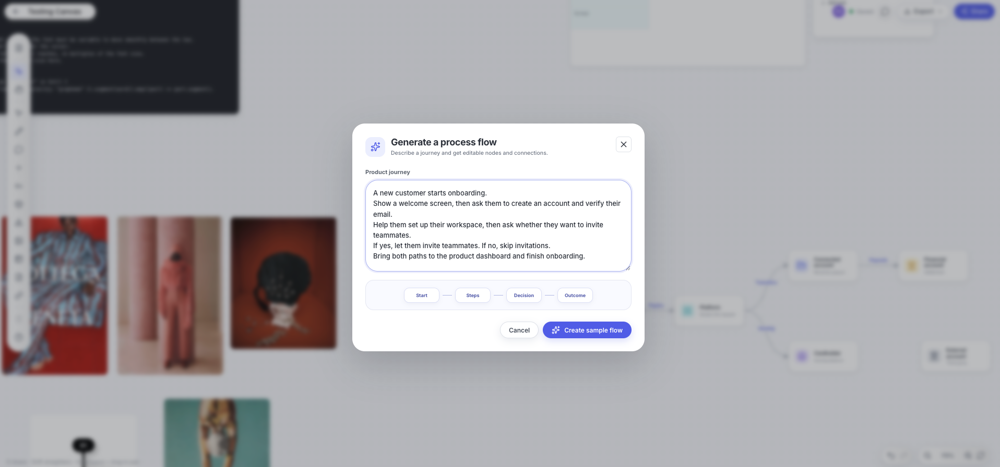

I designed and built an independent canvas application to bring ideas, research, diagrams, and workflows into one flexible workspace. Using AI-assisted development, I translated my product vision into a working prototype while retaining ownership of the experience, architecture decisions, and iteration.
Scope
Product Direction · UX · Interaction Design · Prototyping
Role
Product Designer & Builder
Technology
React, Canvas API
Context
Problem
I start with a blank canvas to understand how things connect
I often start projects with a blank canvas. I collect references, notes, diagrams, and research, then connect them to understand the bigger picture.
For the past years, I’ve used a lot of tools like Miro, Whimsical, Lucidchart, and Figjam to create process flows, mind map, dump ideas, but somehowI like features that exists but not included in one way or another. Subscriptions are going up and there are features I don’t need, so I built what I actually needed for my personal use.
Rather than adapting my workflow to another tool, I want to make how I naturally work, and wanted to make it available offline too. Basically an extension of my brain, not a tool that I need to learn and wait for a feature that I want.
Documented my progress from version 1
How I built it
Choosing the right tool and appraoch
Sample diagram structure of MyMind (Version 1)
Human-led, AI-assisted Development
I stayed responsible for product direction, interaction choices, and deciding whether a change belonged in the experience. I used AI tools as implementation partners, giving them concrete context rather than relying on broad, one-line prompts.
Things I’ve noticed while using 3 AI models inside Visual Studio
I’ve tried using 3 AI models side by side and here are the things I’ve found:
Co-pilot
It was good but I only have limited credits. I used it for smaller tasks.
Codex
It was used mostly for building and iterating this app from the start. I was able to use my credits effectively, and it actually understood the context of what I was building to maintain coherence through refactors.
Claude
It was okay but it didn't understood the context of what I was building and how my code is structured.
Switching models midway doesn’t have the context of why you made certain decisions. It’s not about choosing which is the best but more over the consistency which I think it’s important for building AI-integrated products.
Iterating
Inspect and Refine
Collaborative Testing
I've shared the app with a few friends and colleagues to get feedback on the experience. I’ve also used it myself for actual projects to see how it fits into my workflow.
Using natural language to fix the bugs I've found
Improving the Experience
I've iterated on it based on feedback and my own observations. I've made changes to the UI, interaction patterns, and overall flow of the app to make it more intuitive and efficient.
Including images and screen recording for additional context
Stress Testing
Codex help me to stress test the app with large media files and data sets, then optimize the web performance.
Accessibility
Added by standard
Accessible keyboard navigation is crucial for users with disabilities. Personally, I always use keyboard shortcuts to navigate the app efficiently. I've implemented standard keyboard shortcuts for common actions to use the app efficiently without relying on a mouse.

AI Integration
Creating a process flow from requirements

Using AI to generate process flows
I've tried integrating Open AI API into the app to help me generate processs flows using natural language. Learning more about it which requires understanding the API endpoints and handling the responses effectively.
Additionally, one of the most important thing to consider for me is the cost implications of using the Open API which requires a lot of tokens and price varies per model.
Media Display
Animated GIF, Docs, PDF, Youtube
Display GIF and other formats like CSV, Google Docs/Sheets
During ideation or research phases, I need to visualize and interact with various types of media. Lots of documents like project brief in google docs or sheets format, csv files, and other media types are not natively supported in Figma or Figjam. So I tried building it in a way that would allow me to display these media types within the canvas as it helps me to see it in a bigger context.
Problem Encountered
GIFs are large in size and can slow down the performance of the canvas.
Solution
To optimize GIFs for web use, I've implemented lazy loading to improve performance. Allows you to play it on hover and manually control playback.
Moodboarding
Sorting Algorithm
Sort Images by Colour, Masonry Display
When I have a lot of images, I want to sort them by color to see the overall color palette. This is useful for mood boards, design inspiration, and visual storytelling.
To achieve this, I implemented a color sorting algorithm that analyzes the dominant colors in each image and sorts them accordingly.
Draw and Highlight
Simple Tools
Draw and Highlight
I've implemented simple drawing tools that will allow me to highlight and annotate on top of the elements.
Applying standard functionality
Holding Shift while drawing a line to create a straight horizontal, vertical or 45 degree is applied.
Task Lists and Tables
Structured Data Management
Organization of Tasks and Information
To organize tasks and information, I implemented a simple table and to-do list feature. This allows me to create structured data within the canvas, making it easier to manage and track progress.
Icons
Use of Open Source Library
Iconography
I've first opt-in to use Google Material icons however I want to have a different iconography that will fit the overall aesthetic of MyMind that is open source. I've used Lucide library for the system icons of the app and within the canvas.
Comments and Annotations
Simple comments and annotations can be added to any element in the canvas. Categorized by pages.
Exporting
Without Limits
Export Everything into 1 file or just selected items in the canvas
The canvas is unlimited, generally it can export the whole board into PDF/JPG/PNG/GIF or SVG. This is useful for sharing my work with others or for archiving purposes.
.MyMind File type
It is a JSON file that contains all the data and information of the canvas. This allows me to easily import and export my work, making it easy to collaborate with others or to continue working on a project at a later time.